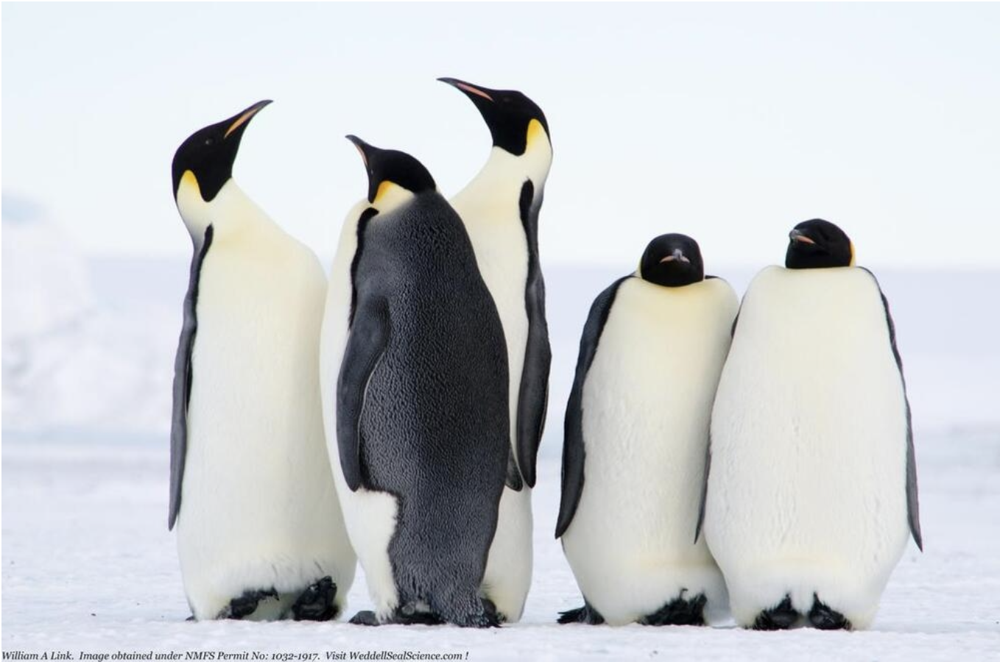
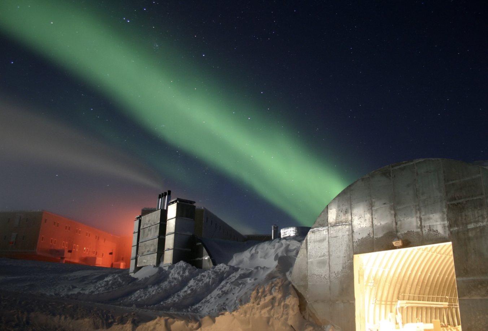
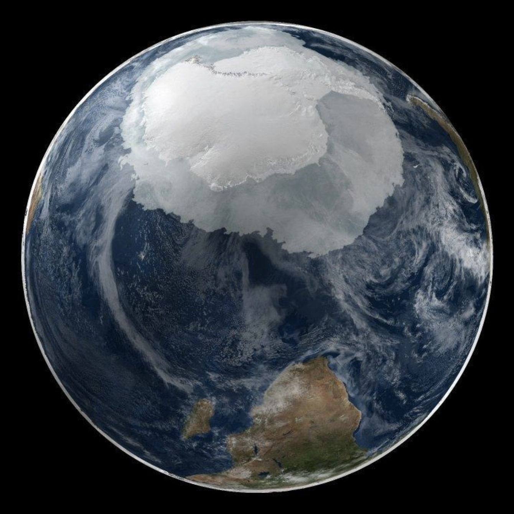

The blue ice covering Lake Fryxell, in the Transantarctic
Mountains, comes from glacial meltwater from the Canada Glacier and
other smaller glaciers. Image courtesy of National Science Foundation.
(Source: CIA World Factbook)
Introduction
A speculation over the existence of a "southern land" was not confirmed
until the early 1820s when British and America commercial operators
and British and Russian national expeditions began exploring the
Antarctic Peninsula region and other areas south of the Antarctic
Circle. It wasn't until the early 1840s that it was established that
Antarctica was indeed a continent and not merely a group of islands
or an area of an ocean. Although there was little human activity in
the early 20th century, it was following World War II that the continent
experienced an un-surge in scientific research.
A number of countries have set up a range of year-round and seasonal
stations, camps, and refuges to support scientific research in
Antarctica. A total of seven countries have made territorial claims,
but most countries do not recognize these claims.
In order to form a legal framework for the activities of nations on
the continent, an Antarctic Treaty was negotiated that neither denies
nor gives recognition to existing territorial claims; signed in 1959,
it entered into force in 1961. Also, relevant to Antarctic governance
are: the Environmental Protocol to the Antarctic Treaty, and the
Convention for the Conservation of Antarctic Marine Living Resources.
Geography
Area
The location of Antarctica is mostly south of the Antarctic Circle.
It is slightly less than 1.5 times the size of the US.
Total: 14.2 million sq km
Land: 14.2 million sq km (285,000 sq km ice-free, 13.915 million
sq km ice-covered) (est.)
Coastline: 17,968 km
Note: Antarctica is the fifth-largest continent, following Asia,
Africa, North America, and South America, but larger than Australia
and the subcontinent of Europe.
Climate

Emperor penguins huddling near Erebus Bay. Photo courtesy
of the US Geologic Survey/ William A. Link.(Source:CIA World Factbook)
The coldest, windiest, and driest continent on Earth with severe
low temperatures that vary with latitude, elevation, and distance from
the ocean. East Antarctica is colder than West Antarctica because of its
higher elevation. Antarctic peninsula has the most moderate climate.
Higher temperatures occur in January along the coast and average
slightl below freezing. Summers are characterized by continuous daylight,
while winters bring continuous darkness. Persistent high pressure over
the interior brings dry, subsiding air that results in very little
cloud cover.
Antarctic animals are exposed to some of the coldest environments on
earth and these animals have physical adaptions and patterns of behaviour
that help them survive the extreme conditions. Penguins and elephant seals
have thick layers of fat and blubber that help keep them warm. They also
adapt by forming large huddles that allow them to share body warmth and
help shelter them from winds. With penguins, The huddle constantly moves
so that all the penguins have a turn in the middle (huddling can reduce
heat loss by up to 50%.
There are no indigenous inhabitants, but there are both permanent and
summer-only staffed research stations.
53 countries have signed the 1959 Antarctic Treaty; 30 of those
operate through their National Antarctic Program a number of seasonal-
only (summer) and year-round research stations on the continent and
its nearby islands south of 60 degrees south latitude (the region covered
by the Antarctic Treaty). The population engaging, supporting science,
or managing/protecting the Antarctic region varies from approximately:
Visitors per Season
Season
People
Summer
4,400
Winter
1,100
Other
1,000
Total
6,500
"Other" refers to other times of the year. It includes personnel doing onboard research in the waters
of the treaty region. (offshore)
Economy
Scientific undertakings rather than commercial pursuits are the
predominant human activity in Antarctica. Offshore fishing and tourism,
both based abroad, account for Antarctica's limited economic activity.

Amundsen-Scott South Pole Station during the long
Antarctic winter night with aurora australis green light dancing
through the sky.(Source:CIA World Factbook)
Government
Name "Antarctica" is derived from two Greek words meaning "opposite
to the Arctic" or "opposite to the north". Antarctica is administered
through annual meetings-known as Antarctic Treaty Consultative Meetings-
which include consultative member nations, non-consultative member nations,
observer organizations, and expert organizations.
Decisions from these meetings are carried out by these member nations
(with respect to their own nationals and operations) in accordance with
their own national laws. More generally, the Antarctic Treaty area
(areas between 60 and 90 degrees south latitude), is subject to relevant
legal instruments and procedures adopted by the states party to the
Antarctic Treaty.
Some US laws directly apply to Antarctica with penalties up to 10,000
in fines and one year in prison. Some of the civil and criminal offences
are:
Murder
the taking of native mammals or birds
entry into specially protected areas
the discharge or disposal of pollutants
the introduction of nonindigenous plants and animals
the importation into the US of certain items from Antarctica
Transportation
Airports
There are a total of 17 Airports with a variety of Transportation
systems. They have unpaved runways and and it varies through the following:
Runway Measures
Amount
Distance(m)
5
From 914 to 1,523 m
4
Over 3,047 m
4
Under 914 m
2
From 2,438 to 3,047 m
2
From 1,524 to 2,437 m
Heliports
All year-round and seasonal stations operated by National Antarctic
Programs, stations designated helicopter landing facilities,
prepared (helipads) or unprepared. Total Heliports: 53
Military
Any measures of a military nature is prohibited by the Antarctic
Treaty. Some of these measures include military bases and
fortifications, the carrying out of military maneuvers, or the testing
of any type of weapon. However, what is permitted is the use of military
personnel or equipment for scientific research or for any other peaceful
purposes

A global view of the Antarctic on 21 September 2005.
This image represents the entire Antarctic region, most of the Southern
Ocean, large portions of the southern Atlantic and Pacific oceans, as
well as the island of Madagascar and southern Africa.(Source:CIA World Factbook)